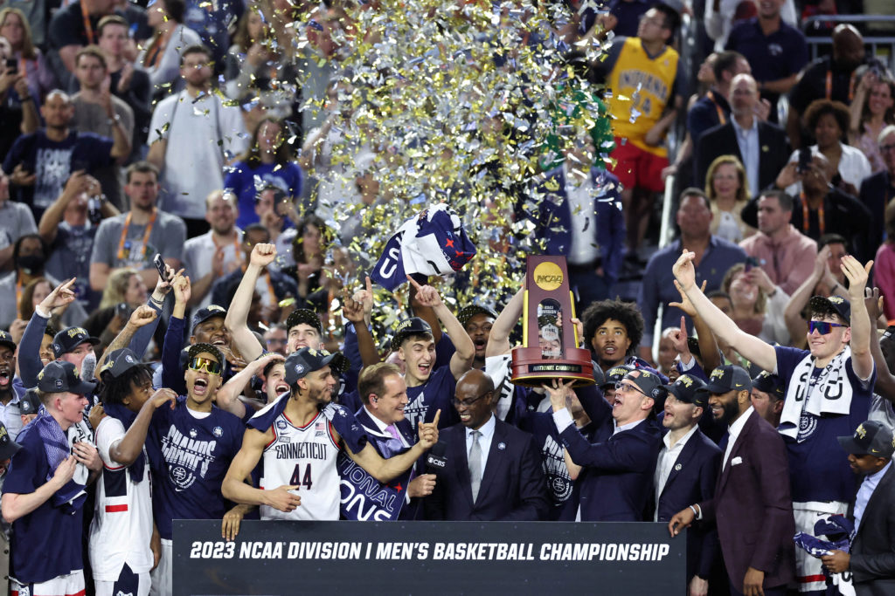

The Overview
March Madness, a tournament made up of 68 college teams hoping to make it all the way and win the NCAA Championship. The tournament constantly has upsets of the favored teams, causing it to be one of the greatest annual sporting events in the U.S. This 68-team format wasn't adopted until 2011, but it definitely made the tournament more interesting, giving more underdog teams a chance to win it all.
When and Where it Started
The idea started 86 years ago in 1939 by Harold Olsen, the coach of Ohio State at the time. This first ever tournament was won by Oregon, led by center Slim Wintermute, a 6 '8 shot-blocking machine. As the years went on, the tournament started to grow, adding more and more teams each year, which is where we are now with 68 teams competing in this widely known tournament, March Madness.
Uconn Winning March Madness in 2023
How it Levels The Playing Field
The new addition of the 68 teams who otherwise would not be in the tournament because of their records gives these smaller, less-known teams a chance to beat the bigger teams and show that they're the same level or even better. Fans can enjoy these “Cinderella runs”, as people like to call them, where underdog teams that had no chance of winning find a way to pull it off. This is way better compared to when March Madness first started, when there were only 8 teams, and you wouldn't be surprised or engaged when one beat the other.
What Makes It Interesting.
People love to be able to fill out the bracket each year as a way to engage with the tournament. The thing that makes it so interesting though is the unpredictability. Multiple low-seed teams upset the best teams in the country, giving fans something to watch for when they see these underdog teams doing so well, which nobody could have predicted.
Conclusion
In conclusion, this is a great tournament with an unpredictable nature and many die-hard fans are waiting to see if their team can win, and I hope you will tune in to watch the tournament whenever you can to enjoy its fascinating concept.